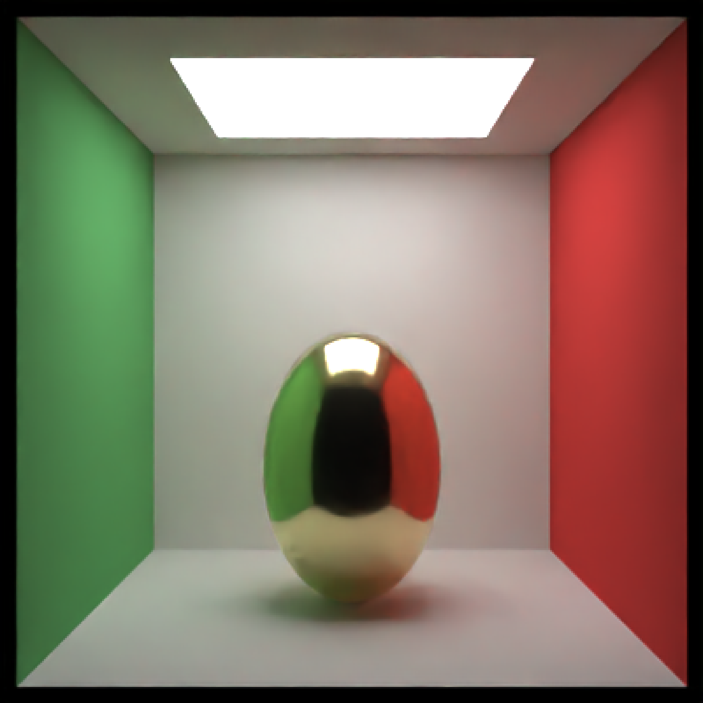
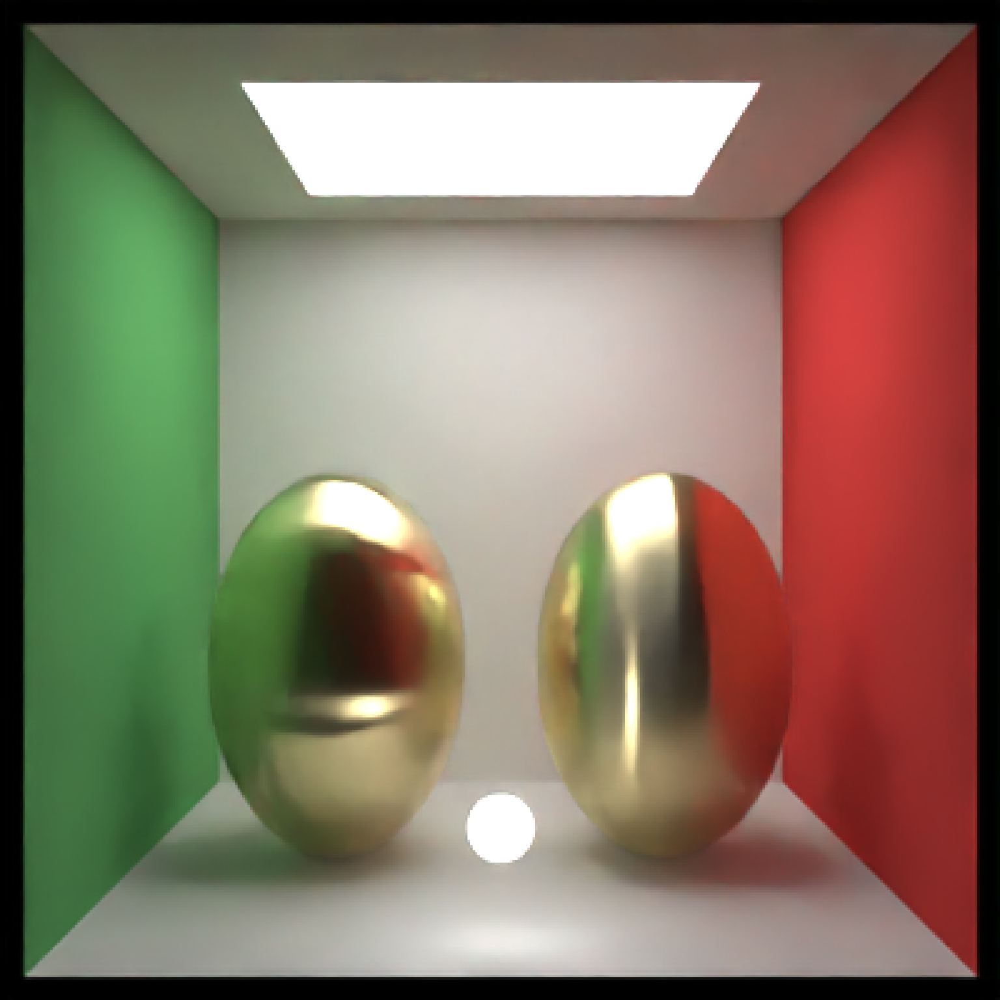
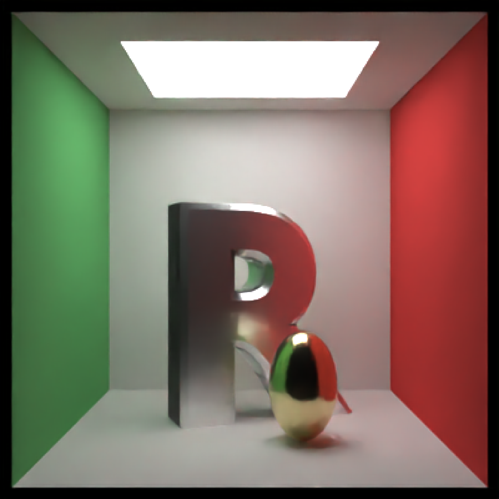
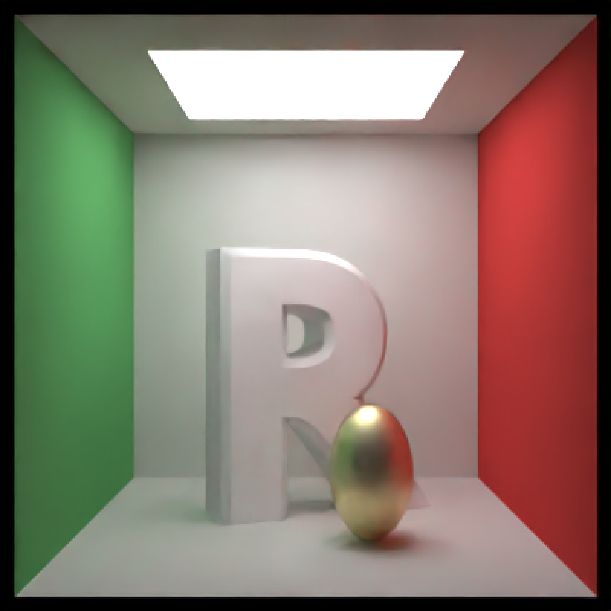

Microfacet Material
microfacet( color = "white", roughness = 1e-04, eta = 0, kappa = 0, microfacet = "tbr", checkercolor = NA, checkerperiod = 3, noise = 0, noisephase = 0, noiseintensity = 10, noisecolor = "#000000", gradient_color = NA, gradient_transpose = FALSE, gradient_point_start = NA, gradient_point_end = NA, gradient_type = "hsv", image_texture = NA, image_repeat = 1, alpha_texture = NA, bump_texture = NA, bump_intensity = 1, importance_sample = FALSE )
| color | Default `white`. The color of the surface. Can be either a hexadecimal code, R color string, or a numeric rgb vector listing three intensities between `0` and `1`. |
|---|---|
| roughness | Default `0.0001`. Roughness of the surface, between `0` (smooth) and `1` (diffuse). Can be either a single number, or two numbers indicating an anisotropic distribution of normals. `0` is a smooth surface, while `1` is extremely rough. This can be used to create a wide-variety of materials (e.g. `0-0.01` is specular metal, `0.02`-`0.1` is brushed metal, `0.1`-`0.3` is a rough metallic surface , `0.3`-`0.5` is diffuse, and above that is a rough satin-like material). Two numbers will specify the x and y roughness separately (e.g. `roughness = c(0.01, 0.001)` gives an etched metal effect). If `0`, this defaults to the `metal()` material for faster evaluation. |
| eta | Default `0`. Wavelength dependent refractivity of the material (red, green, and blue channels). If single number, will be repeated across all three channels. |
| kappa | Default `0`. Wavelength dependent absorption of the material (red, green, and blue channels). If single number, will be repeated across all three channels. |
| microfacet | Default `tbr`. Type of microfacet distribution. Alternative option `beckmann`. |
| checkercolor | Default `NA`. If not `NA`, determines the secondary color of the checkered surface. Can be either a hexadecimal code, or a numeric rgb vector listing three intensities between `0` and `1`. |
| checkerperiod | Default `3`. The period of the checker pattern. Increasing this value makes the checker pattern bigger, and decreasing it makes it smaller |
| noise | Default `0`. If not `0`, covers the surface in a turbulent marble pattern. This value will determine the amount of turbulence in the texture. |
| noisephase | Default `0`. The phase of the noise. The noise will repeat at `360`. |
| noiseintensity | Default `10`. Intensity of the noise. |
| noisecolor | Default `#000000`. The secondary color of the noise pattern. Can be either a hexadecimal code, or a numeric rgb vector listing three intensities between `0` and `1`. |
| gradient_color | Default `NA`. If not `NA`, creates a secondary color for a linear gradient between the this color and color specified in `color`. Direction is determined by `gradient_transpose`. |
| gradient_transpose | Default `FALSE`. If `TRUE`, this will use the `v` coordinate texture instead of the `u` coordinate texture to map the gradient. |
| gradient_point_start | Default `NA`. If not `NA`, this changes the behavior from mapping texture coordinates to mapping to world space coordinates. This should be a length-3 vector specifying the x,y, and z points where the gradient begins with value `color`. |
| gradient_point_end | Default `NA`. If not `NA`, this changes the behavior from mapping texture coordinates to mapping to world space coordinates. This should be a length-3 vector specifying the x,y, and z points where the gradient begins with value `gradient_color`. |
| gradient_type | Default `hsv`. Colorspace to calculate the gradient. Alternative `rgb`. |
| image_texture | Default `NA`. A 3-layer RGB array or filename to be used as the texture on the surface of the object. |
| image_repeat | Default `1`. Number of times to repeat the image across the surface. `u` and `v` repeat amount can be set independently if user passes in a length-2 vector. |
| alpha_texture | Default `NA`. A matrix or filename (specifying a greyscale image) to be used to specify the transparency. |
| bump_texture | Default `NA`. A matrix, array, or filename (specifying a greyscale image) to be used to specify a bump map for the surface. |
| bump_intensity | Default `1`. Intensity of the bump map. High values may lead to unphysical results. |
| importance_sample | Default `FALSE`. If `TRUE`, the object will be sampled explicitly during the rendering process. If the object is particularly important in contributing to the light paths in the image (e.g. light sources, refracting glass ball with caustics, metal objects concentrating light), this will help with the convergence of the image. |
Single row of a tibble describing the microfacet material.
# Generate a golden egg, using eta and kappa taken from physical measurements # See the website refractiveindex.info for eta and k data, use # wavelengths 580nm (R), 530nm (G), and 430nm (B). # \donttest{ generate_cornell() %>% add_object(ellipsoid(x=555/2,555/2,y=150, a=100,b=150,c=100, material=microfacet(roughness=0.1, eta=c(0.216,0.42833,1.3184), kappa=c(3.239,2.4599,1.8661)))) %>% render_scene(lookfrom=c(278,278,-800),lookat = c(278,278,0), samples=500, aperture=0, fov=40, parallel=TRUE,clamp_value=10)#Make the roughness anisotropic (either horizontal or vertical), adding an extra light in front #to show off the different microfacet orientations generate_cornell() %>% add_object(sphere(x=555/2,z=50,y=75,radius=20,material=light())) %>% add_object(ellipsoid(x=555-150,555/2,y=150, a=100,b=150,c=100, material=microfacet(roughness=c(0.3,0.1), eta=c(0.216,0.42833,1.3184), kappa=c(3.239,2.4599,1.8661)))) %>% add_object(ellipsoid(x=150,555/2,y=150, a=100,b=150,c=100, material=microfacet(roughness=c(0.1,0.3), eta=c(0.216,0.42833,1.3184), kappa=c(3.239,2.4599,1.8661)))) %>% render_scene(lookfrom=c(278,278,-800),lookat = c(278,278,0), samples=500, aperture=0, fov=40, parallel=TRUE,clamp_value=10)#Render a rough silver R with a smaller golden egg in front generate_cornell() %>% add_object(obj_model(r_obj(),x=555/2,z=350,y=0, scale_obj = 200, angle=c(0,200,0), material=microfacet(roughness=0.2, eta=c(1.1583,0.9302,0.5996), kappa=c(6.9650,6.396,5.332)))) %>% add_object(ellipsoid(x=200,z=200,y=80, a=50,b=80,c=50, material=microfacet(roughness=0.1, eta=c(0.216,0.42833,1.3184), kappa=c(3.239,2.4599,1.8661)))) %>% render_scene(lookfrom=c(278,278,-800),lookat = c(278,278,0), samples=500, aperture=0, fov=40, parallel=TRUE,clamp_value=10)#Increase the roughness generate_cornell() %>% add_object(obj_model(r_obj(),x=555/2,z=350,y=0, scale_obj = 200, angle=c(0,200,0), material=microfacet(roughness=0.5, eta=c(1.1583,0.9302,0.5996), kappa=c(6.9650,6.396,5.332)))) %>% add_object(ellipsoid(x=200,z=200,y=80, a=50,b=80,c=50, material=microfacet(roughness=0.3, eta=c(0.216,0.42833,1.3184), kappa=c(3.239,2.4599,1.8661)))) %>% render_scene(lookfrom=c(278,278,-800),lookat = c(278,278,0), samples=500, aperture=0, fov=40, parallel=TRUE,clamp_value=10)# }